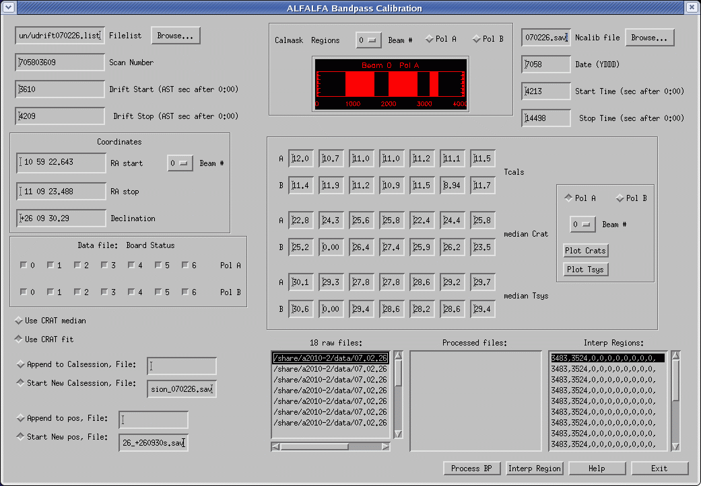
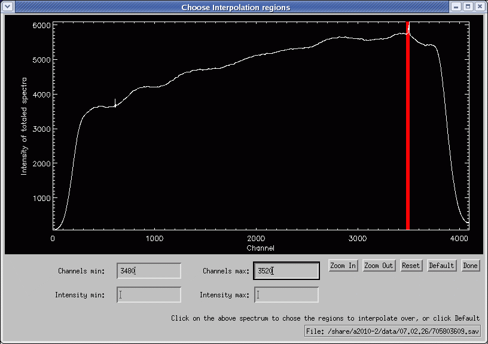
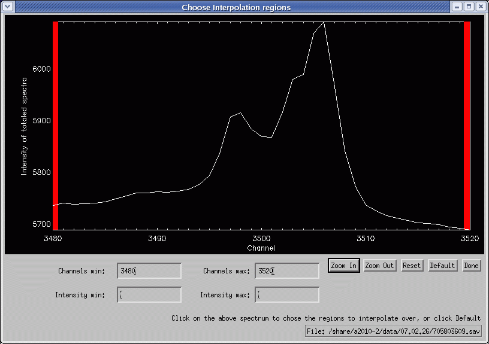

UAT09.01 Scavenger Hunt #2: Introduction to ALFALFA Drift Scan Data
This scavenger hunt will provide an introduction to the raw ALFALFA drift scan data, how we process it to Level I and other related trivia.- Temperatures, temperatures, temperatures
Radio astronomers are always talking about
temperatures. But, what are they talking about?
a. What do we mean by "system temperature"?
b. What is the temperature in the ALFA dewar?
d. How are the ALFA amplifiers kept that cold? (i.e. what refrigerant is used)
e. What do 21 cm HI line astronomers mean when they talk about the "spin temperature"?
f. What is the "brightness temperature" of a radio source?
g. What is the "antenna temperature" of a radio source?
h. What is the typical temperature and density of a diffuse HI cloud in the Milky Way?
i. What is the typical temperature and density of a molecular H2 cloud in the Milky Way?
j. What is the typical temperature and density of an ionized HII cloud in the Milky Way?
k. What is the temperature of the Cosmic Microwave Background radiation?
l. What is the temperature in Ithaca, NY right now?
- Calibrating ALFALFA
We use a very simple scheme, the LOOP-END calibration
to calibrate the ALFALFA data in system temperature units (kelvin).
At the end of every 600 second drift scan, we stop the data taking and
then fire a calibration noise diode for 1 second; this is referred
to as the CAL-ON scan.
a. CALIB2 is the process by which we fit a function to the
values of the CRAT derived from each firing of the noise
diode. What is the "CRAT" and what are its units? Hint: Look at this
plot from CALIB2 .
b. Under what circumstances do we expect our calibration mode
to give a bogus value of the CRAT, which we then exclude from the fit?
c. How hot was it in the famous futuristic 1967 film starring Julie Christie
and Oskar Werner?
- Running the Bandpass Subtraction and Calibration routine BPDGUI
Here is the BPD gui when it is running. Refer to this figure in answering the following questions. Click here for a larger view of the screen. a. On what date (year, month, day) were these data taken? b. What is the ALFALFA drift designation for this dataset? c. What is the typical system temperature of an ALFALFA spectrum? d. What do astronomers mean by the "gain" of the system? e. What do astronomers mean when they measure the "flux density" (rather than the antenna temperature) of a source? e. The rms noise on an ALFALFA spectrum is typically about 2 mJy per channel. For the central beam (Bm 0), what fraction of the system temperature is that? 
- The ALFALFA bandpass viewed in BPDGUI
We use a sequential integer number to refer to each frequency
unit, also called a "channel". Each ALFALFA spectrum has
4096 spectral channels, or pixels in frequency-space.
Here is display of the full ALFALFA bandpass for one beam and one drift. Refer to this figure in answering the following questions. Click here for a larger view of the screen. a. What is the channel separation in frequency units? b. Why does the channel separation in velocity units change across the bandpass? c. Why isn't the bandpass reponse flat (i.e. constant with frequency)? d. Notice that the intensity of the bandpass falls off at the extreme edges. How many channels on each side would you discard because of this reduced sensitivity? e. Assuming that you discard those channels, what is the final useful spectral range? Give your answer both in frequency units and in the corresponding velocity units (assume v = cz). 
- The Galactic Hydrogen in BPDGUI
Here is BPD gui zoom in of the region around the Galactic hydrogen for one of the scans. Refer to this figure in answering the following question. Click here for a larger view of the screen. a. What channel corresponds to the rest frequency of the HI 21 cm line? b. Why doesn't the Galactic HI always appear in the same channels? c. Why are there two peaks in this spectrum? 
- FLAGBB: Don't flag those High Velocity Clouds!
Here is FLAGBB display of one drift. Refer to this figure in answering the following question. Click here for a larger view of the screen. a. Why don't we flag the bright white vertical stripe toward the right side? b. What is a "high velocity cloud"? c. Where is the high velocity cloud in this frame? d. If "you don't know clouds at all", what instead do you recall? 
- FLAGBB: Don't flag those continuum sources!
Here is FLAGBB display of one drift. Refer to this figure in answering the following question. Click here for a larger view of the screen. a. How do we know that the horizontal alternating white/dark band is most likely a continuum source? b. Why does it appear to have two peaks (in the right hand total power display)? c. How many seconds does it take for ALFA to drift across a point source? 
- FLAGBB: Ugly stuff!
Here is FLAGBB display of one drift. Three bright spots are flagged in the center of the frame. They arise from the Nuclear Detection (NUDET) system aboard the Global Positioning System (GPS) satellites. Refer to this figure in answering the following question. Click here for a larger view of the screen. a. What is the approximate frequency of the NUDET transmissions? b. How many GPS satellites are there? c. What is the orbital period of a GPS satellite? d. How could you find out how many GPS satellites there are above Puerto Rico now? You don't have to do this; just tell us how you would go about it. e. In the movie "Some Like It Hot", who (what actor) utters the famous closing words "Well, nobody's perfect." 
- FLAGBB: More fun than human beings should be allowed to have!
But, sometimes, we find galaxies and interesting stuff around them!
Here is FLAGBB display of the data for beam 4 associated with the drift d100658+033142.809100305.sav obtained on 08.03.31. Refer to this figure in answering the following question. Click here for a larger view of the screen. a. Who flagged these data? (We suggest you thank her!) b. This drift goes almost precisely across what galaxy? c. What actor delivered the line: "My Mama always said, 'Life was like a box of chocolates; you never know what you're gonna get.'" 
This page created by and for the members of the ALFALFA Survey Undergraduate team Last modified: Fri Jan 9 12:27:18 EST 2009 by Martha
{kind=link}
{kind=link}
{kind=link}
{kind=link}